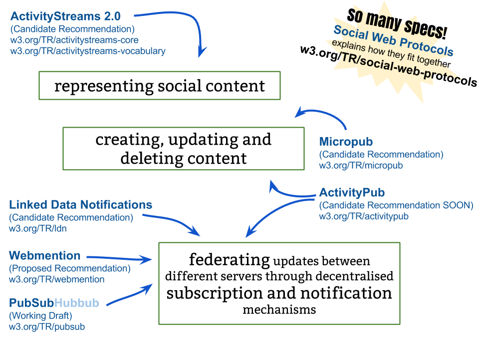

Review 2016-11-23
Intro
Studies
Framework
CONTEXT
/ \
who sees you what do they see
/ \ / \
CASCADE CONNECTIVITY CONTROL CUSTOMISABILITY
\ | | /
how this image of you is interpreted/used
-
Context
- social/cultural expectations of platform/community
- personal motivations and use cases
- technical constraints
- IRL/offline cultural biases of systems
-
Control
- persistent vs ephemeral data/identities
- anonymity/pseudonymity/realnames
- traceability - between identities
-
Customisability
- expression given to other uses
- profile/page/avatar as "body" for self expression
-
Connectivity
- impression management
- imagined audience
-
Cascade
- expression given off
- privacy/surveillence
- unintended profiles built by third parties

Standards

Timeline
2012-2013
- Studied content creators
- How to make their activities machine-readable
- Empircal analysis of profiles, resulting in better understanding of complexity of online identity and personas
2013-2014
- Looking to decentralised systems to retain ownership
- Tangent about named graphs for changing data for different contexts. Decided it is too complicated for a technical solution alone.
- Tried some monocultures. Switched to standards.
2014-2015
- Standards for decentralised social via Social Web WG
- Studying how people adapt centralised social systems and how this reveals needs not met.
- Studied what is permitted for self-presentation in mainstream systems from a purely functionality perspective
2015-2016
- Studying (deficiencies of) existing decentralisation work
- Studying people who build/use decentralised systems for social already
- Contributing towards a suite of standards for modular integration social features
- Created framework for understanding different factors which together impact persentation of self through online social
2016-2017
- Evaluate new standards work compared to where we've come from. What has this enabled?
- (Writing up literature)
Plan
- Nov: Finish SocialWG history/summary chapter.
- Dec: Background on other decentralisation attempts.
- Jan: Catch up literature
- Feb: Intro and conclusions
- Mar: Final draft
- Apr: Submit